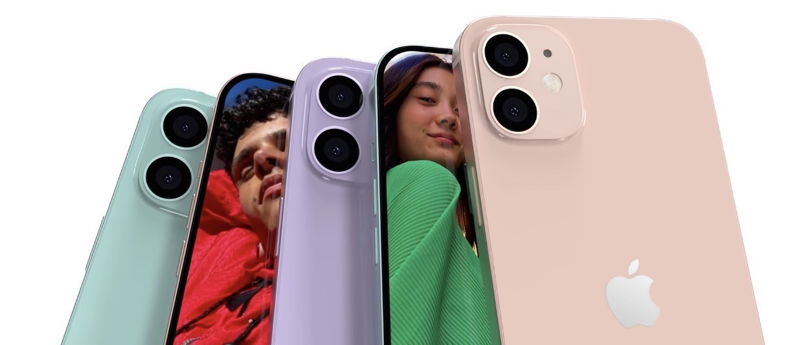
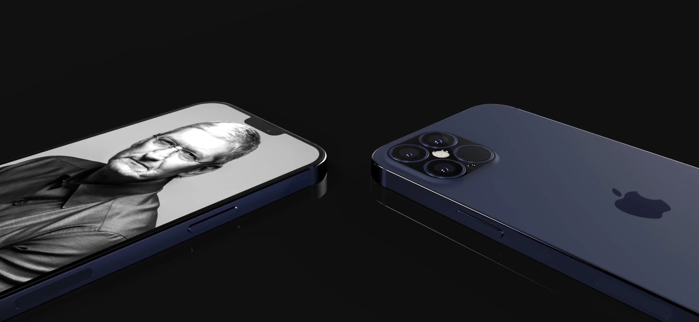
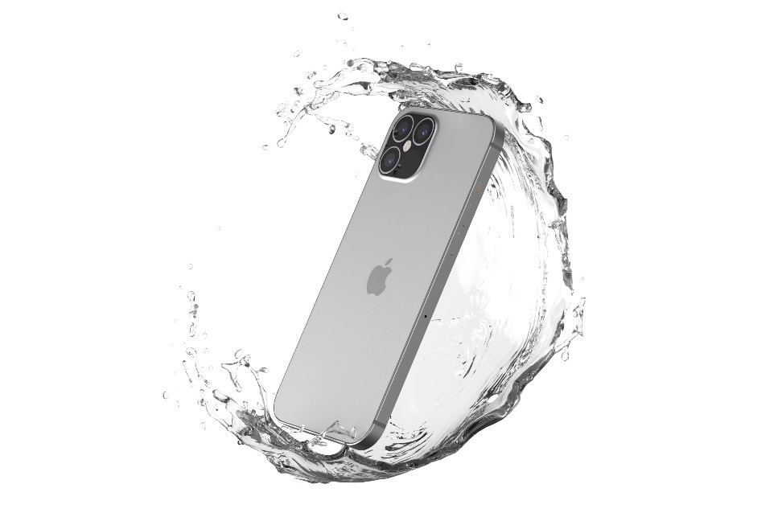

Proximo Lanzamiento-iPhone12: No apto para bolsillos argentos

Al año aún le quedan importantes lanzamientos y ya se sabe, cuanto más esperado, más rumores hay. Uno de ellos es el de la remesa de smartphones de Apple y por ello no es mal momento para reunir todo lo que sabemos y todos los rumores sobre el iPhone 12.

¿Qué precio va a tener el iPhone 12?
Evidentemente es algo que aún no se sabe de manera oficial y con absoluta certeza, pero el precio tampoco es una cuestión que escape a los rumores y filtraciones. En MacRumors hablan de algo que sería bastante llamativo porque el iPhone más básico de todos partiría de los 649 dólares, lo cual sería el precio más bajo de salida para un iPhone con pantalla OLED, pero también se habla de 749 dólares (el iPhone 11 partió de 699 dólares, un precio ya comparativamente más barato que el iPhone XR, que llegó por 749 dólares).
Ahora veremos que se habla de cuatro modelos, y los precios que se barajan son los siguientes:
iPhone 12 mini: 649 dólares
iPhone 12: 749 dólares
iPhone 12 Pro: 999 dólares
iPhone 12 Pro Max: 1.099 dólares
En euros normalmente hay un ligero incremento y se estiman, respectivamente, 699 euros, 800 euros, 1.069 euros y 1.179 euros. Serían relativamente bajos en comparación a los del año pasado, viendo que el iPhone 11 partía de los 809 euros, así que parece más probable que veamos un precio cercano a los 749 euros para el modelo básico, sobre todo teniendo en cuenta que como posteriormente comentaremos parece que el 5G llega a los iPhone. De hecho, se habla a su vez de un aumento de precio con respecto al año pasado, por lo que el iPhone 12 base partiría de los 749 dólares (849 euros).

¿Qué modelos va a haber de iPhone 12?
Hasta de cuatro modelos se habla para este año, dejando los Pro en dos como hasta ahora y añadiendo un modelo Max al modelo base. El principal rasgo para diferenciarlos a simple vista sería el tamaño y por ende la pantalla, que según los rumores irían desde las 5,4 pulgadas para el más pequeño hasta las 6,7 pulgadas para el iPhone 12 Pro Max. Se habla de los siguientes nombres y características, según una reciente filtración:
iPhone 12 mini: pantalla de 5,4 pulgadas (aluminio).
iPhone 12: pantalla de 6,1 pulgadas (aluminio).
iPhone 12 Pro: pantalla de 6,1 pulgadas (acero).
iPhone 12 Pro Max: pantalla de 6,7 pulgadas (acero).
¿Y los colores? El año pasado los iPhone 11 Pro y Pro Max estrenaron un tono verde oscuro y el iPhone 11 siguió la estela del iPhone XR con colores algo más atrevidos, y lo que se espera para estos iPhone 12 es que haya un modelo en azul marino. También que la trasera se mantenga con el cristal que hemos visto en los iPhone de 2019, mate y más resistente a huellas.